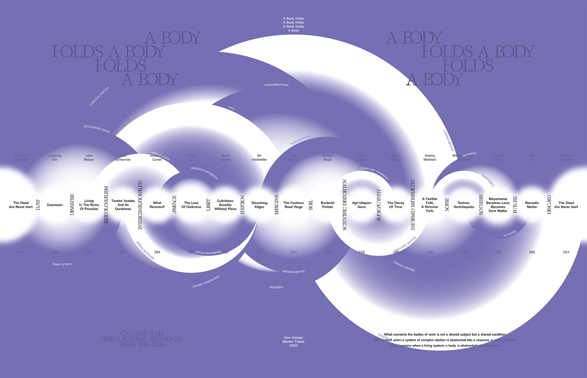
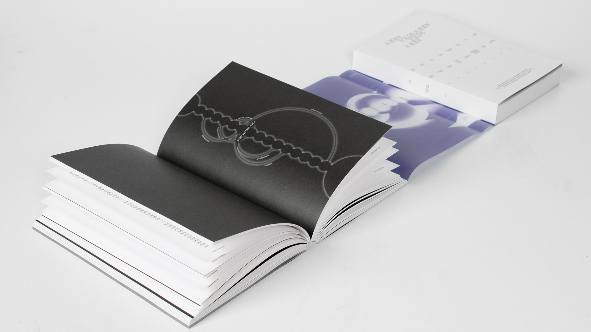
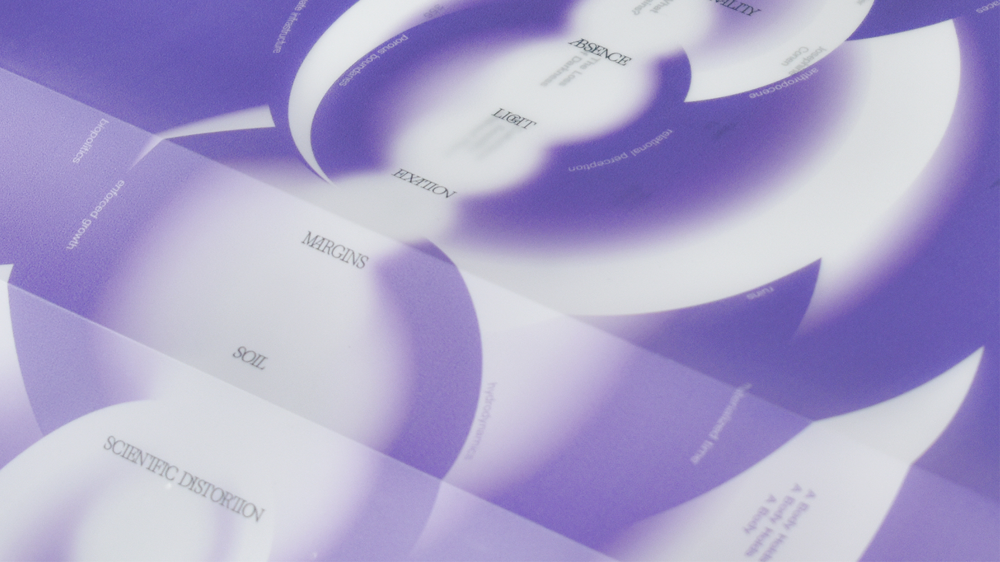
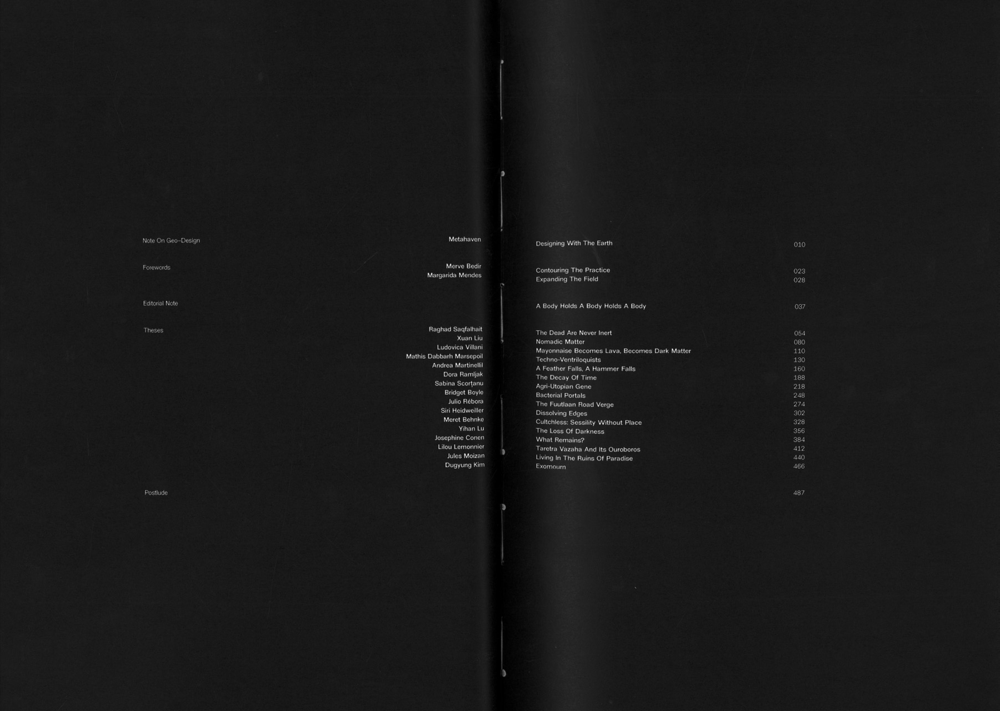

Synopsis
“A Body Holds a Body Holds a Body” is the Geo–Design MA Theses Publication 2026.
The book is a collective work bringing together the sixteen graduating Geo–Design theses and their entangled urgencies at a time when the ecological, political, and institutional systems we inhabit are under increasing pressure.
Across vastly different scales and sites, the theses trace bacteria, birds, plants, minerals, radioactive isotopes, seeds, oysters, ash, tidal landscapes, ruins, intergenerational memory, darkness, simulations, and gravitational waves.
What connects the works is not a shared subject, but a shared condition: what happens when a living system is abstracted into a resource, a unit, or a baseline?
Taken together, the sixteen theses propose that thinking through scales is not simply a method, but a form of responsibility.
Editorial
Bridget Boyle, Dora Ramljak, Josephine Conen, Ludovica Villani, Meret Behnke, Raghad Saqfalhait, Xuan Liu
Graphic Design
Andrea Martinelli, Mathis Dabbarh Marsepoil, Sabina Scorţanu, Siri Heidweiller, Yihan Lu
Production
Dugyung Kim, Jules Moizan, Julio Rébora, Lilou Lemonnier



